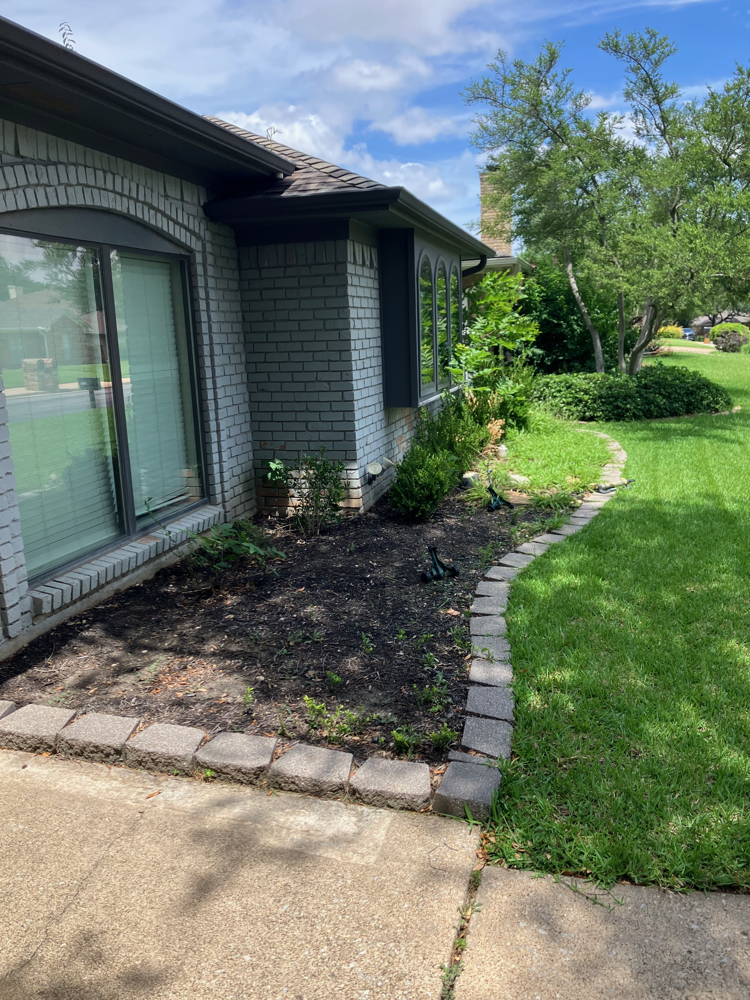
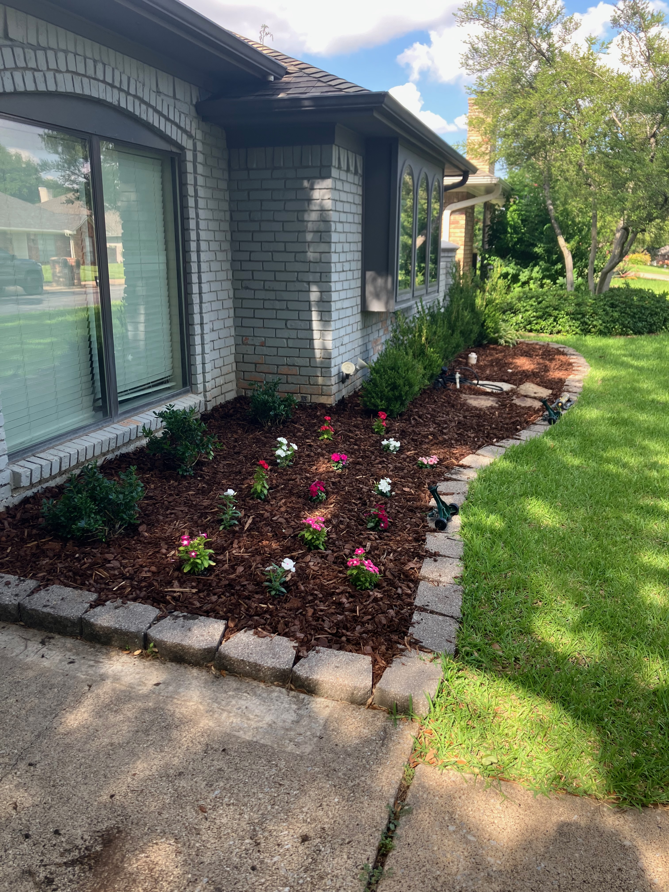
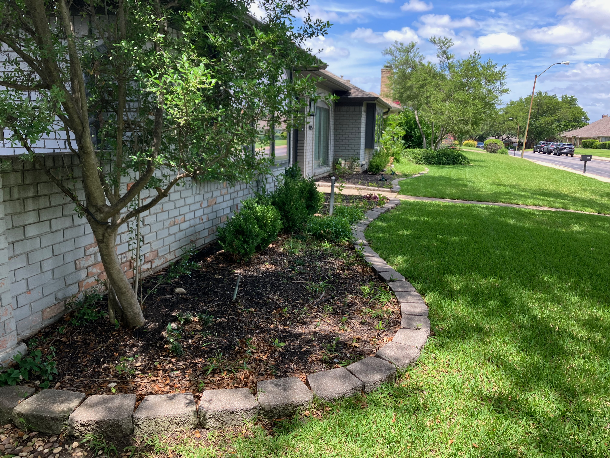
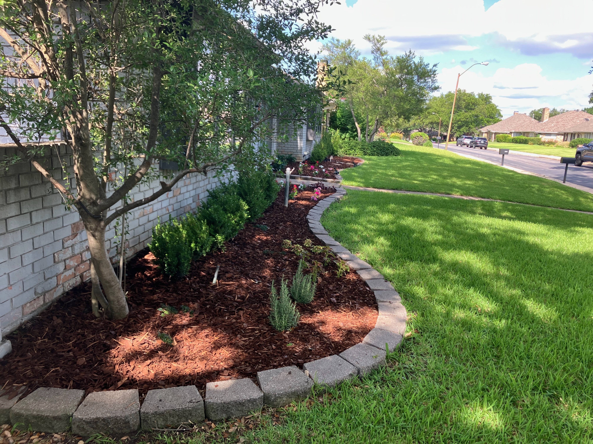

FLOWER BED LANDSCAPING
Beautiful, well-maintained flower beds designed to add color, structure, and character to your landscape.
Get a Free EstimateFrom refreshing existing beds to creating new landscape areas, we can help transform your flower beds into clean, attractive spaces.
Create new flower beds with defined shapes, clean edges, soil, and the materials needed to finish the space.
Add flowers, shrubs, and other landscape plants selected to fit the property's conditions and desired look.
Clean, defined edges help separate flower beds from lawns, sidewalks, and other areas of the landscape.
Finish your beds with mulch, gravel, rock, or other ground-cover materials to improve appearance and help retain moisture.
See examples of our flower bed landscaping and planting projects throughout the Dallas area.




Contact us for a free estimate and let's discuss your landscaping project.
Get a Free Estimate